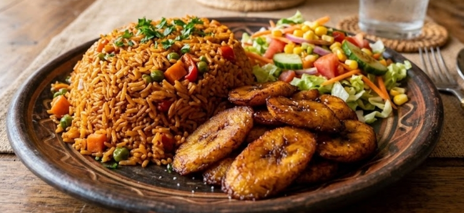

Nigerian Jollof Rice#
Nigerian Jollof is a delicious West African dish cooked in a rich, spicy tomato and pepper sauce. Cooked in different ways, but this version uses parboiled rice, well seasoned stock, and slow cooking to develop a deep flavor with smoky finish.

Provided by: Stanley
Stats#
Cooking Time: 1 hour 15 minutes
Servings: 6
Ingredients#
For the pepper-tomato base#
4 large red bell peppers
2-3 Scotch bonnet peppers, adjusted to taste
4 medium ripe tomatoes
2 medium onions, divided
3 tablespoons tomato paste
120 ml vegetable oil
3 garlic cloves, minced
1 tablespoon grated fresh ginger (optional)
For the rice#
600 g parboiled rice
750-900 ml chicken or vegetable stock
2 teaspoons curry powder
1 teaspoon dried thyme
2 bay leaves
1 teaspoon smoked paprika (optional, for extra smoky flavor)
1 teaspoon white or black pepper
Salt and seasoning powder or stock cubes, to taste
1 tablespoon butter (optional)
Instructions#
Prepare the pepper blend: Roughly chop the bell peppers, tomatoes, Scotch bonnet peppers, and one onion. Blend until mostly smooth. For a hot and peppery Jollof, use two or three Scotch bonnet peppers, adjusting to your tolerance.
Prepare the rice: Rinse the parboiled rice thoroughly until the water runs mostly clear. Drain and set aside.
Fry the tomato paste: Heat the vegetable oil in a large, heavy-based pot over medium heat. Finely slice the remaining onion and fry until softened. Add the tomato paste and fry for 5-8 minutes, stirring frequently, until it darkens slightly and loses its raw taste.
Cook down the pepper blend: Carefully add the blended pepper mixture. Stir well and simmer uncovered for about 15-25 minutes, stirring regularly, until the mixture thickens and much of its excess water has evaporated.
Season the sauce: Add the garlic, ginger if using, curry powder, thyme, bay leaves, smoked paprika, pepper,and stock. Season with salt and seasoning powder or stock cubes to taste. Simmer for another 5 minutes. Taste the sauce; it should be well seasoned because the rice will absorb its flavor.
Add the rice: Stir the drained rice into the sauce until every grain is coated. Add enough stock or hot water to just reach the level of the rice, adjusting the liquid to suit your rice and pot. Stir once to distribute everything evenly.
Cook gently: Cover the pot tightly with a lid and reduce the heat to low. Cook for about 30-40 minutes, checking periodically. If the rice is still firm and the pot is dry, add small water, cover, and continue cooking. The rice is ready when the grains are soft but still hold their shape; if it is too wet, cook uncovered to allow excess moisture to evaporate and avoid frequent stirring, which can make the rice mushy.
Develop the smoky finish: When the rice is almost tender, allow it to finish cooking over very low heat. Keep the pot covered so the rice steams evenly.
Rest and serve: Remove the bay leaves, add butter if desired, and gently fluff the rice with a fork. Let it rest, covered, for 5 minutes before serving.
Serving suggestion: Serve hot with fried plantain, grilled chicken, beef, or a fresh salad.
Tip: Scotch bonnet peppers are very hot. Handle them carefully, avoid touching your eyes, and adjust the quantity to your preference. Cooking time and liquid needs vary by rice brand and pot, so check the rice as it cooks.